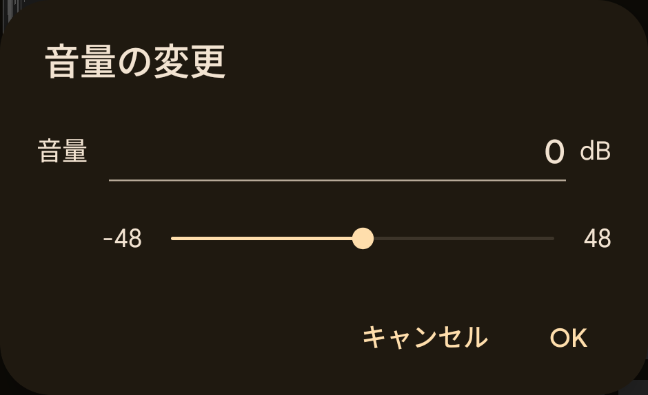
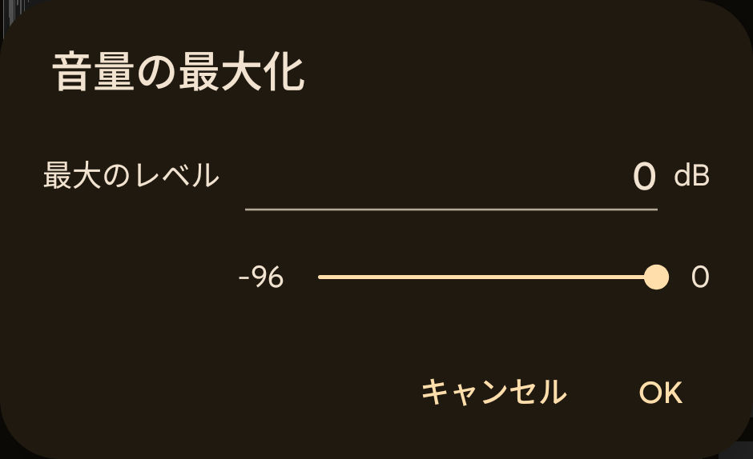
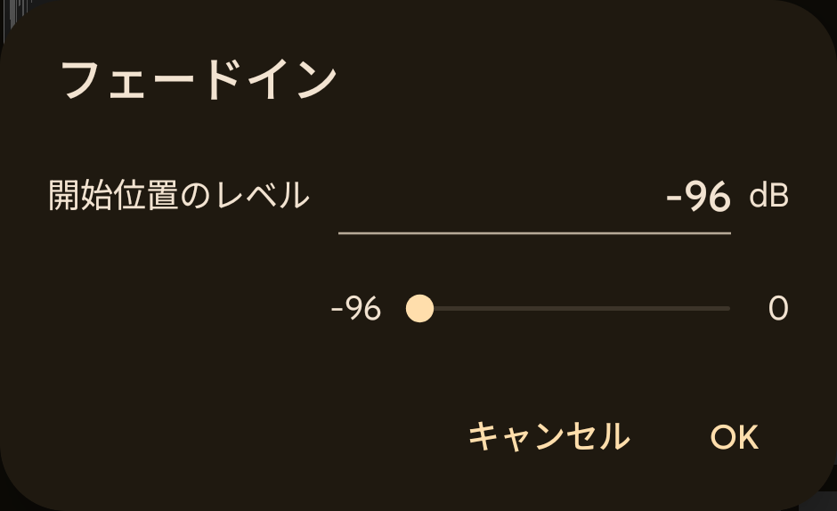
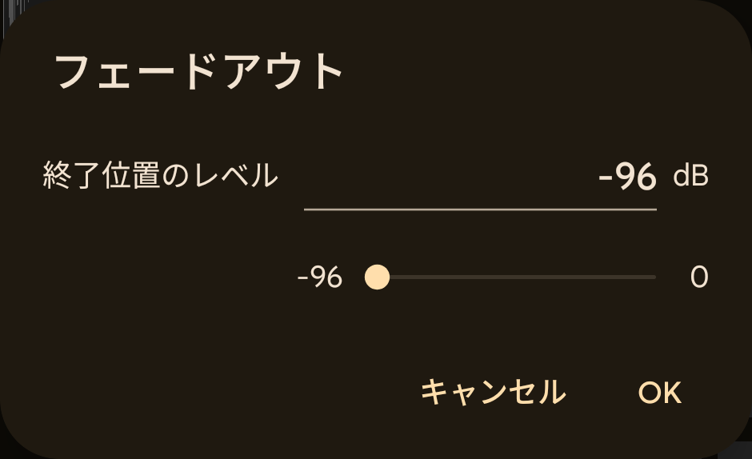

「選択範囲の加工」グループ
開始位置から終了位置までの選択範囲だけに対して音量調整や波形加工を行うコマンド群です。どのコマンドも音声データの長さは変わらず、実行後の選択範囲もそのまま維持されます。
音量の変更
選択範囲の音量を dB（デシベル）で増減します。

- 指定範囲：
-48〜+48dB（初期値0dB）。小数も入力できます。0 dB で変化なし、+6 dB で約 2 倍、-6 dB で約半分になります。 - 範囲外の値を入力した場合は端の値（-48 または +48 dB）で実行されます。16 ビットの範囲を超えたサンプルはクリップされます。
- 音量を完全に 0 にしたい場合は 無音化 を使用してください。
音量の最大化
選択範囲内の最大ピークを調べ、そのピークが指定したレベルになるように選択範囲全体の音量を一律に調整します（ノーマライズ）。

- 指定範囲：
-96〜0dB（初期値0dB）。0 dB を指定すると 16 ビットの最大振幅に揃います。 - ステレオで L / R 両方がオンのときは、L と R のうち大きい方のピークを基準に両チャンネルを同じ倍率で調整します。片方だけオンのときは、オンのチャンネルのピークだけを調べます。
- 選択範囲が完全に無音のときは何もせず終了します。
無音化
ダイアログを表示せず、選択範囲の音量を即座に 0（無音）にします。
フェードイン / フェードアウト
選択範囲の音量を滑らかに上げ下げします。音量変化は聴感上自然な対数カーブ（dB が時間に対して直線的に変化）で行います。


- フェードイン：開始位置のレベルを指定値（
-96〜0dB、初期値-96dB）、終了位置を 0 dB として徐々に音量を上げます。 - フェードアウト：開始位置を 0 dB、終了位置のレベルを指定値（
-96〜0dB、初期値-96dB）として徐々に音量を下げます。
位相反転
ダイアログを表示せず、選択範囲内の各サンプルの符号（正負）を反転します（-32768 は 32767 に変換されます）。
逆再生
ダイアログを表示せず、選択範囲内のサンプルの並びを時間方向に反転します（先頭と末尾を入れ替えます）。
チャンネル入れ替え
ダイアログを表示せず、選択範囲内の L チャンネルと R チャンネルのデータを入れ替えます。
- ステレオ音声を開いているときのみ有効です（モノラル時は無効になります）。
- 上部バーの L / R スイッチの状態に関わらず、常に L と R を入れ替えます。
L / R スイッチとの連動：「チャンネル入れ替え」を除くすべてのコマンド（音量の変更・音量の最大化・無音化・フェードイン・フェードアウト・位相反転・逆再生）では、ステレオ音声時に L / R スイッチでオフにしたチャンネルは加工されず元のまま残ります。